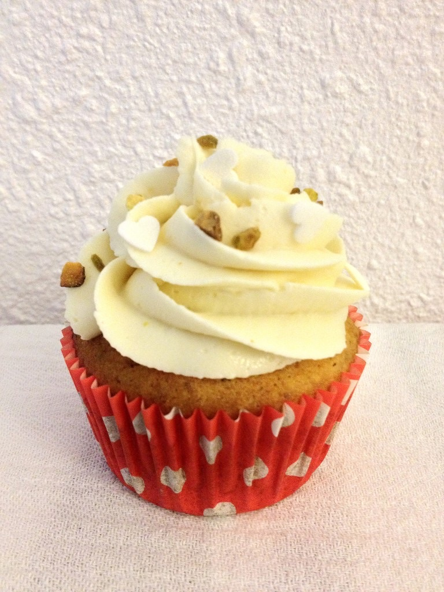
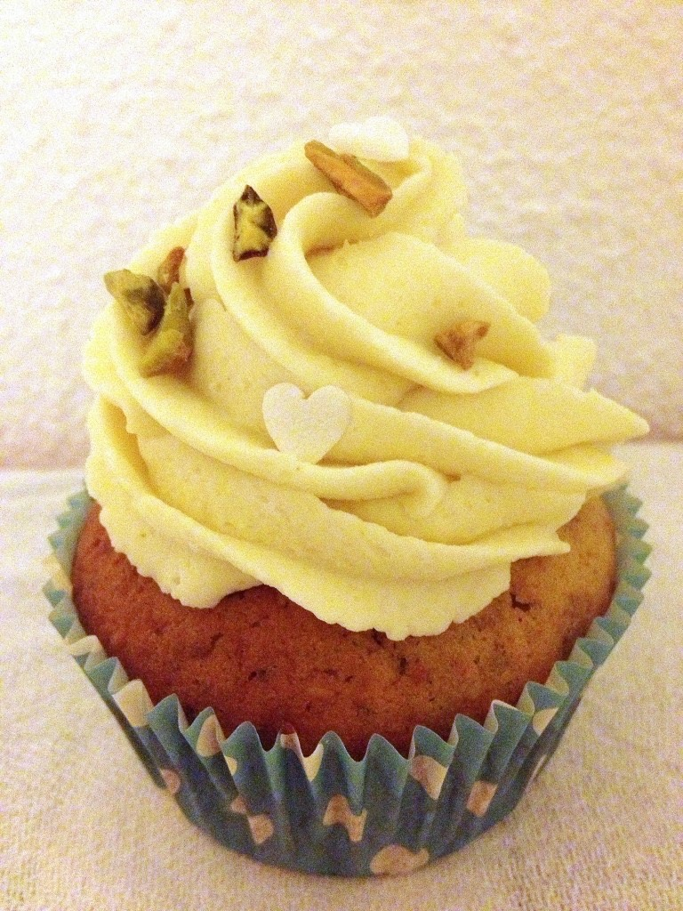

Cupcake pistache – Chantilly chocolat blanc

Un délicieux cupcake pistache pour le goûter ca vous dit? C’est par ici!Aujourd’hui je vous propose la recette du cupcake préféré de mon chéri, j’ai nommé le cupcake pistache recouvert d’une délicieuse chantilly au chocolat blanc. L’association de la pistache et du chocolat blanc fonctionne vraiment bien je trouve! Vous me direz ce que vous en pensez si vous tentez de faire cette recette!
Les photos ont été prises avec mon téléphone portable donc elles ne font pas vraiment honneur à ce cupcake… Un de ces jours je ferai de bien plus belles photos car ce cupcakes est vraiment délicieux et il en vaut vraiment la peine 🙂
Maintenant je fais donc place à la recette. N’hésitez pas à me donner votre avis dans les commentaires.
Ingrédients
- oeufs - 2
- sucre - 100g
- beurre doux (mou) - 100g
- farine - 100g
- philadelphia - 50g
- pistache émondées - 50g
- levure chimique - 2 càc
- amande amère - 1/2 càc
- chocolat blanc - environ 40g
- crème fleurette entière - 100ml
- chocolat blanc - 160 g
Instructions
- Casser le chocolat en morceaux dans un bol
- Dans une petite casserole faire chauffer la crème fleurette (attention à ne pas la faire bouillir elle doit juste être très chaude)
- Verser la crème dans le bol, sur le chocolat afin de le faire fondre
- Remuer jusqu'à ce que le chocolat soit totalement fondu
- Réserver cette préparation au frais pendant une nuit.
- Moudre les pistaches afin qu'elles deviennent de la poudre - Réserver
- Dans une jatte,mélanger le beurre mou avec le sucre jusqu’à ce le mélange devienne mousseux
- Battre les œufs et les incorporer petit à petit au mélange précédent
- Ajouter le philadelphia
- Mélanger la farine et la levure et l'incorporer à la préparation
- Couper en tout petits morceaux quelques carrés de chocolat et les incorporer
- Pour finir ajouter la poudre de pistache et l'amande amère.
- Bien mélanger pour obtenir une préparation bien homogène
- Remplir les caissettes au 3/4 et enfourner 20 minutes a 180°
- Laisser bien refroidir les cupcakes avant de les glacer
- Reprendre le mélange préparé la veille
- Monter en chantilly avec un batteur électrique (petite astuce : placez les fouets du batteur au congélateur pendant la préparation de la pâte à cupcake et la chantilly montera sans problème)


Les tips de la communauté
Cupcakes appréciés avec des commentaires élogieux sur les recettes créatives du blog. Question sur les quantités (50g ou 500g de pistaches clairement résolue).
Astuces
- Utiliser 50g de pistaches (non 500g)